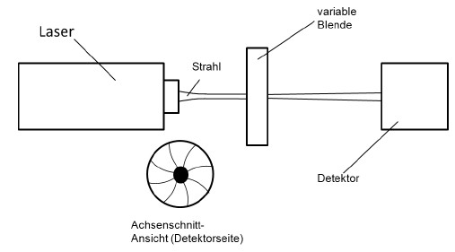
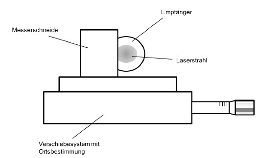
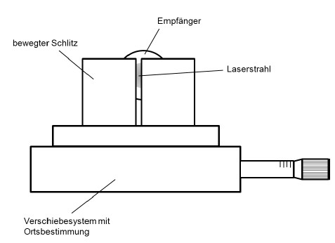
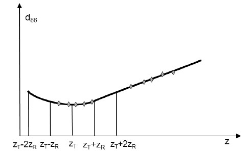
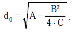

(1) Messungen der Strahlungsleistung werden meist an Dauerstrichlasern, Messungen der Strahlungsenergie an gepulsten Lasern ausgeführt.
(2) Die am häufigsten eingesetzten Detektoren sind Si-Detektoren im sichtbaren Spektralbereich (fotoelektrischer Effekt), pyroelektrische Empfänger im sichtbaren und infraroten Spektralbereich (hauptsächlich zum Nachweis gepulster oder modulierter Strahlung) und sogenannte Thermosäulen. Die letzteren beiden Detektorarten können in einem großen Spektralbereich eingesetzt werden. Tabelle A3.1 gibt einen groben Überblick über einige Detektorarten und die jeweiligen Haupteinsatzbereiche.
Tab. A3.1 Detektoren zur Leistungs- und Energiemessung
| Detektor | Wellenlängenbereich in μm |
| Photomultiplier | 0,18 – 0,9 |
| Si | 0,2 – 1,1 |
| InGaAs | 0,9 – 1,6 (2,6) |
| PbS | 0,8 – 3,0 |
| InSb | 1 – 5,5 |
| HgCdTe | 2 – 15 |
| Pyroelektrische Empfänger | 0,2 – 20 |
| Thermosäule | 0,2 – 20 |
(3) Empfänger für optische Strahlung müssen für ihre Messaufgabe kalibriert sein.
(1) In DIN EN ISO 11146 [8, 9] werden drei alternative Prüfverfahren zur Bestimmung der Strahlparameter beschrieben. Es sind die des Verfahrens der variablen Apertur (Abbildung A3.1), des Verfahrens der bewegten Messerschneide (Abbildung A3.2) sowie des Verfahrens des bewegten Schlitzes (Abbildung A3.3).

Abb. A3.1 Prinzip des Verfahrens der variablen Apertur

Abb. A3.2 Prinzip des Verfahrens der bewegten Messerschneide

Abb. A3.3 Prinzip des Verfahrens des bewegten Schlitzes
(2) Es werden dabei jeweils ortsabhängige Messungen des Strahldurchmessers d durchgeführt. Beim ersten Verfahren wird d durch Messungen der Laserleistung bei verschiedenen Durchmessern der Blende bestimmt, während er bei den anderen Verfahren aus Leistungsmessungen in Abhängigkeit der transversalen Verschiebung der Schneide oder des Schlitzes erfolgt. Je nach Wahl des Verfahrens müssen bestimmte Randbedingungen eingehalten und Korrekturen vorgenommen werden. Moderne, automatisch arbeitende Systeme mit Bildverarbeitung, die die Messbedingungen der Norm einhalten, sind kommerziell erhältlich.
(3) Die obige Norm sieht bei frei zugänglichen Strahltaillen mindestens zehn Messungen zur Auswertung vor. Dabei sollen etwa die Hälfte in der Nähe der Strahltaille bis zu einem Abstand von plus oder minus einer Rayleigh-Länge zR erfolgen und die andere Hälfte in Abständen größer als zwei Rayleigh-Längen von der Taille (Abbildung A3.4). Ist die Strahltaille nicht zugänglich, muss das Verfahren auf eine künstlich erzeugte Taille angewendet werden.

Abb. A3.4 Bestimmung der Strahlparameter durch ortsabhängige Messung des Strahlquerschnitts
(4) Aus einer parabolischen Anpassung der gemessenen Strahldurchmesser d gemäß
| d2(z) = A+B⋅z+C⋅z2 | Gl. A3.1 |
können dann die Strahlparameter d0 und φ0 gewonnen werden. Bei den Größen A, B und C handelt es sich um Fit-Parameter der parabolischen Anpassung.
(5) So ergibt sich der Strahldurchmesser in der Strahltaille d0 zu
 |
Gl. A3.2 |
(6) Die Strahldivergenz (Fernfeldöffnungswinkel, Divergenzwinkel) φ0, insbesondere bei nicht zugänglichen Strahltaillen, kann nach obiger Norm bestimmt werden, indem ein fokussierendes Objekt der Brennweite f in den Strahlengang gebracht wird. Dies führt zur Bildung einer künstlichen Strahltaille. Der Durchmesser d0 wird nach Gleichung A3.2 bestimmt. Damit kann die Strahldivergenz des freien Laserstrahls berechnet werden:
| φ0 = | d0 | Gl. A3.3 |
| f |